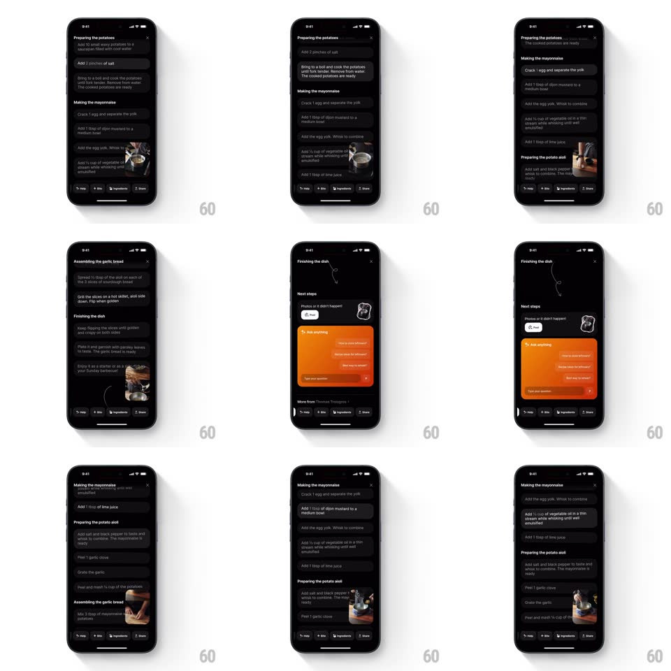

Media
Frame-by-frame

Rebuild this interaction 1:1: Creme's scroll-morphing step player - scrolling the dark recipe steps list drags a small video player between sections: it morphs size and position to dock beside whichever step is active, expanding for steps with video and tucking away for those without.

Rebuild this interaction 1:1: Creme's scroll-morphing step player - scrolling the dark recipe steps list drags a small video player between sections: it morphs size and position to dock beside whichever step is active, expanding for steps with video and tucking away for those without.
## Integration
Integration: stack-agnostic spec - springs given as stiffness/damping, timed motions as duration + curve; map every value to your framework and animation library of choice.
## Scene
Dark recipe page: section headers ("Preparing the potatoes", "Making the mayonnaise", "Preparing the potato aioli", "Assembling the garlic bread", "Finishing the dish") with rounded step rows; a compact video player (hands whisking) appears embedded at the active step; the flow ends at "Finishing the dish" with a Next steps card and an orange "Ask anything" assistant card.
## Motion spec
Pattern: scroll-driven docking player.
- Scroll: as a new step row enters the focus zone, the player detaches from the old step and glides to the new one (spring ~300/24), resizing to that step's slot (full-width embed -> compact corner) with matching corner-radius interpolation.
- Steps without video collapse the player to a slim pill that sticks to the section header; steps with video re-expand it (spring ~280/22).
- The player's content crossfades to the new step's clip (250ms) mid-flight.
- Reaching "Finishing the dish": the player docks away entirely and the Next steps + orange "Ask anything" cards rise in (stagger 120ms, spring ~320/26).
## Calibration
- The player is one continuous surface - scroll position drives its target slot, springs do the travel.
- Scroll stays fully responsive; the player never hijacks the gesture.
## Reduced motion
Player crossfades between slots without travel.
## Don't miss
- The player shrink-and-travel happens WHILE scrolling - it chases the active step rather than waiting for rest.
- The orange assistant card is the only saturated color on the page - it owns the ending.